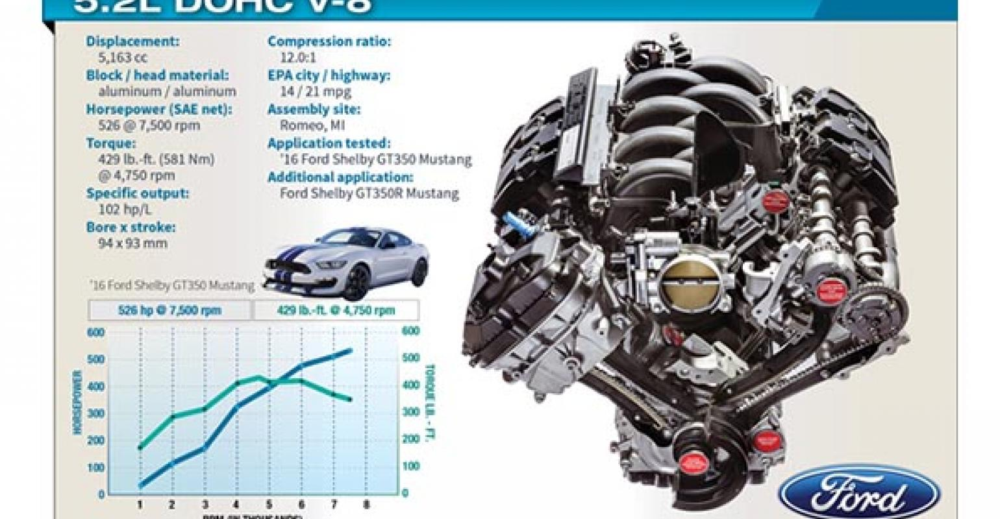

GT350 and GT350R Engine Specs
The Shelby GT350 and GT350R comes equipped with the 526hp 5.2L Ford "Voodoo" engine that features a flat-plane crank that allows the engine to rev out to around 8000rpms. Notice the table below. Even though redline on these engines is 8000rpms the horsepower starts the drop after 7700rpms. The GT350 and GT350R have the same engine.
| Horsepower | Torque | RPM Range |
|---|---|---|
| 400.1hp | 429.1lb-ft | 4900 |
| 469.9hp | 418.5lb-ft | 5900 |
| 514.4hp | 391.8lb-ft | 6900 |
| 525.3hp | 358.5lb-ft | 7700 |
